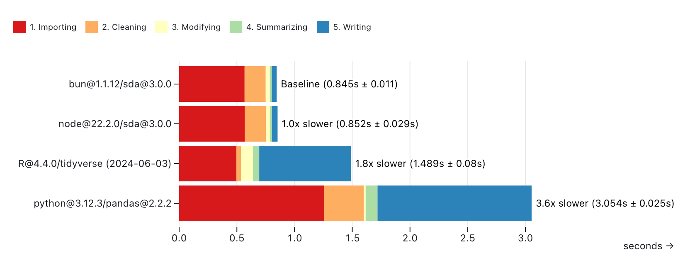
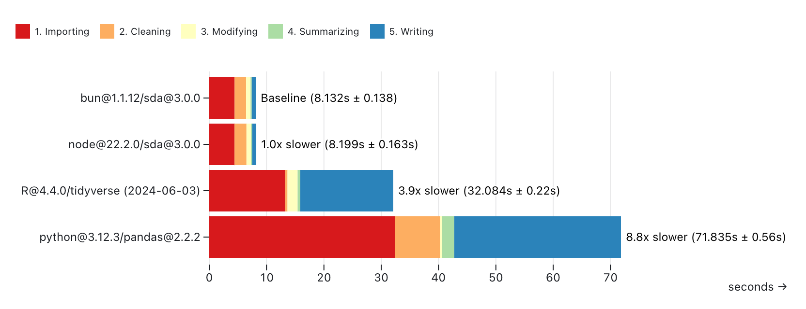
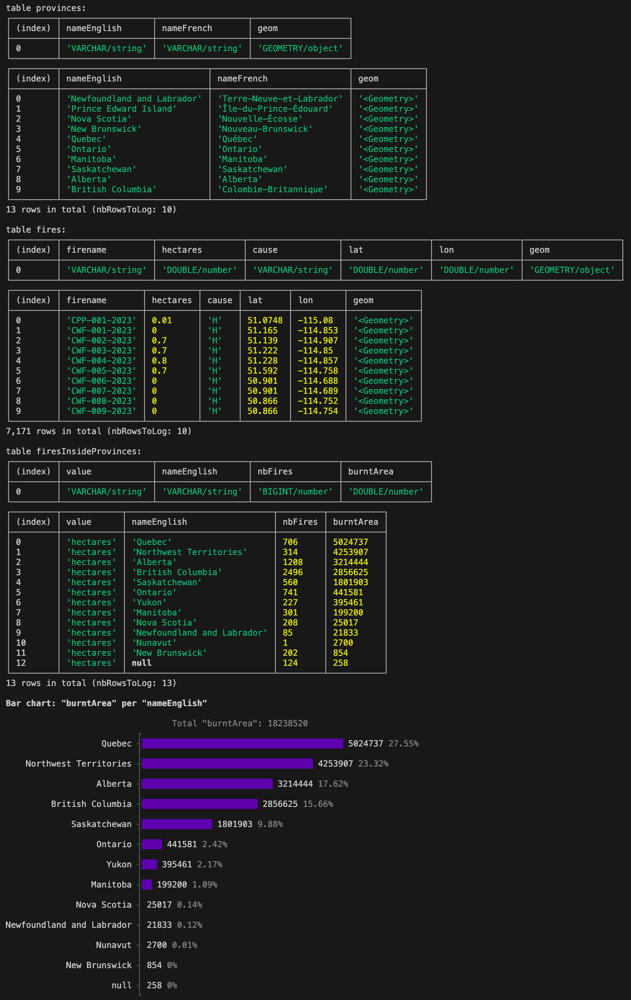

SDA is an easy-to-use and high-performance JavaScript library for data analysis. You can use it with tabular and geospatial data.
The library is available on NPM and JSR. The documentation is available on Github and JSR.
The library is maintained by Nael Shiab, computational journalist and senior data producer for CBC News.
To use the library in your browser, check out simple-data-analysis-flow. You might also find the journalism library and Code Like a Journalist interesting.
Create a folder and run setup-sda:
# Node.js >= 22.6.x
npx setup-sda
# Bun
bunx --bun setup-sda
# Deno >= 2.x.x
deno -A jsr:@nshiab/setup-sda
If you want to use SDA with Framework, pass the --framework flag:
# Node.js >= 22.6.x
npx setup-sda --framework
# Bun
bunx --bun setup-sda --framework
# Deno >= 2.x.x
deno -A jsr:@nshiab/setup-sda --framework
To also initialize a git repository, pass the --git flag.
If you want to add the library to an existing project, here's how.
# Deno >= 2.x.x
deno install --node-modules-dir=auto --allow-scripts=npm:duckdb jsr:@nshiab/simple-data-analysis
# To run with Deno
deno run --node-modules-dir=auto -A main.ts
# Node.js
npm i simple-data-analysis
# Bun
bun add simple-data-analysis
SDA is born out of the frustration of switching between Python, R, and JavaScript to produce data journalism projects. Usually, data crunching and analysis are done with Python or R, and interactive data visualizations are coded in JavaScript. However, being proficient in multiple programming languages is hard. Why can't we do everything in JS?
The missing piece in the JavaScript/TypeScript ecosystem was an easy-to-use and performant library for data analysis. This is why SDA was created.
The library is based on DuckDB, a fast in-process analytical database. Under the hood, SDA sends SQL queries to be executed by DuckDB. We use duckdb-node and duckdb-wasm. This means SDA can run in the browser and with Node.js and other runtimes. For geospatial computations, we rely on the duckdb_spatial extension.
The syntax and the available methods were inspired by Pandas (Python) and the Tidyverse (R).
You can also write your own SQL queries if you want to (check the customQuery method) or use JavaScript to process your data (check the updateWithJS method).
Feel free to start a conversation or open an issue. Check how you can contribute.
To test and compare the library's performance, we calculated the average temperature per decade and city with the daily temperatures from the Adjusted and Homogenized Canadian Climate Data. See this repository for the code.
We ran the same calculations with simple-data-analysis@3.0.0 (both Node.js and Bun), Pandas (Python), and the tidyverse (R).
In each script, we:
Each script has been run ten times on a MacBook Pro (Apple M1 Pro / 16 GB).
With ahccd-samples.csv:
simple-data-analysis@3.0.0 is the fastest, but if we skip writing the CSV file, the tidyverse shows impressive speed with small files.

With ahccd.csv:
Thanks to DuckDB, simple-data-analysis@3.0.0 really shines with big files. It's the fastest option.

We also tried the One Billion Row Challenge, which involves computing the min, mean, and max temperatures for hundreds of cities in a 1,000,000,000 rows CSV file. The library has been able to crunch the numbers in 1 minute 32 seconds on the same computer (Apple M1 Pro / 16 GB). For more, check this repo forked from this one. The JavaScript code is here.
Note that DuckDB, which powers SDA, can also be used with Python and R.
In this example, we load a CSV file with the latitude and longitude of 2023 wildfires in Canada, create point geometries from it, do a spatial join with provinces' boundaries, and then compute the number of fires and the total area burnt per province.
If you are using Deno, make sure to switch the first line to import { SimpleDB } from "@nshiab/simple-data-analysis"; and to enable the Deno extension.
import { SimpleDB } from "simple-data-analysis"
// We enable the cacheVerbose option, which will
// log information about the cached data.
const sdb = new SimpleDB({ cacheVerbose: true })
const fires = sdb.newTable("fires")
// We cache these steps with a ttl of 60 seconds.
// On the first run, the data will be fetched
// and stored in the hidden folder .sda-cache.
// If you rerun the script less than 60 seconds
// later, the data won't be fetched but loaded
// from the local cache. However, if you run the
// code after 60 seconds, the data will be
// considered outdated and fetched again.
// After another 60 seconds, the new data in the cache will
// expire again. This is useful when working with scraped data.
// If you update the parameters or code passed to the cache
// method, everything starts over.
await fires.cache(
async () => {
await fires.loadData(
"https://raw.githubusercontent.com/nshiab/simple-data-analysis/main/test/geodata/files/firesCanada2023.csv"
)
await fires.points("lat", "lon", "geom")
},
{ ttl: 60 }
)
const provinces = sdb.newTable("provinces")
// Same thing here, except there is no ttl option,
// so the cached data will never expire unless you delete
// the hidden folder .sda-cache. Again, if you update
// the code passed to the cache method, everything
// starts over.
await provinces.cache(async () => {
await provinces.loadGeoData(
"https://raw.githubusercontent.com/nshiab/simple-data-analysis/main/test/geodata/files/CanadianProvincesAndTerritories.json"
)
})
const firesInsideProvinces = sdb.newTable("firesInsideProvinces")
// While caching is quite useful when fetching data,
// it's also handy for computationally expensive
// operations like joins and summaries.
// Since the fires table has a ttl of 60 seconds
// and we depend on it here, we need a ttl equal
// or lower. Otherwise, we won't work with
// up-to-date data.
await firesInsideProvinces.cache(
async () => {
await fires.joinGeo(provinces, "inside", {
outputTable: "firesInsideProvinces",
})
await firesInsideProvinces.removeMissing()
await firesInsideProvinces.summarize({
values: "hectares",
categories: "nameEnglish",
summaries: ["count", "sum"],
decimals: 0,
})
await firesInsideProvinces.renameColumns({
count: "nbFires",
sum: "burntArea",
})
await firesInsideProvinces.sort({ burntArea: "desc" })
},
{ ttl: 60 }
)
await firesInsideProvinces.logTable(12)
// It's important to call done() at the end.
// This method will remove the unused files
// in the cache. It will also log the total duration
// if the logDuration option was set to true.
await sdb.done()
Here's what you should see in your console if your run this scripts.

Instead of running the same code over and over again, you can cache the results. This can speed up your workflow, especially when fetching data or performing computationally expensive operations.
Here's the previous example adapted to cache data. For more information, check the cache method documentation.
The data is cached in the hidden folder .sda-cache at the root of your code repository. Make sure to add it to your .gitignore. If you want to clean your cache, just delete the folder.
If you set up with setup-sda (see Quick setup at the top), .sda-cache is automatically added to your .gitignore and you can use npm run clean or bun run clean or deno task clean to clear the cache.
import { SimpleDB } from "simple-data-analysis"
// We enable two options to make our lives easier.
// cacheVerbose will log information about the cached
// data, and logDuration will log the total duration between
// the creation of this SimpleDB instance and its last operation.
const sdb = new SimpleDB({ cacheVerbose: true, logDuration: true })
const fires = sdb.newTable("fires")
// We cache these steps with a ttl of 60 seconds.
// On the first run, the data will be fetched
// and stored in the hidden folder .sda-cache.
// If you rerun the script less than 60 seconds
// later, the data won't be fetched but loaded
// from the local cache. However, if you run the
// code after 60 seconds, the data will be
// considered outdated and fetched again.
// After another 60 seconds, the new data in the cache will
// expire again. This is useful when working with scraped data.
// If you update the code passed to the cache method,
// everything starts over.
await fires.cache(
async () => {
await fires.loadData(
"https://raw.githubusercontent.com/nshiab/simple-data-analysis/main/test/geodata/files/firesCanada2023.csv"
)
await fires.points("lat", "lon", "geom")
},
{ ttl: 60 }
)
const provinces = sdb.newTable("provinces")
// Same thing here, except there is no ttl option,
// so the cached data will never expire unless you delete
// the hidden folder .sda-cache. Again, if you update
// the code passed to the cache method, everything
// starts over.
await provinces.cache(async () => {
await provinces.loadGeoData(
"https://raw.githubusercontent.com/nshiab/simple-data-analysis/main/test/geodata/files/CanadianProvincesAndTerritories.json"
)
})
const firesInsideProvinces = sdb.newTable("firesInsideProvinces")
// While caching is quite useful when fetching data,
// it's also handy for computationally expensive
// operations like joins and summaries.
// Since the fires table has a ttl of 60 seconds
// and we depend on it here, we need a ttl equal
// or lower. Otherwise, we won't work with
// up-to-date data.
await firesInsideProvinces.cache(
async () => {
await fires.joinGeo(provinces, "inside", {
outputTable: "firesInsideProvinces",
})
await firesInsideProvinces.removeMissing()
await firesInsideProvinces.summarize({
values: "hectares",
categories: "nameEnglish",
summaries: ["count", "sum"],
decimals: 0,
})
await firesInsideProvinces.renameColumns({
count: "nbFires",
sum: "burntArea",
})
await firesInsideProvinces.sort({ burntArea: "desc" })
},
{ ttl: 60 }
)
await firesInsideProvinces.logTable(12)
// It's important to call done() at the end.
// This method will remove the unused files
// in the cache. It will also log the total duration
// if the logDuration option was set to true.
await sdb.done()
After the first run, here's what you'll see in your terminal. For each cache(), a file storing the results has been written in .sda-cache.
The whole script took around a second to complete.
Nothing in cache. Running and storing in cache.
Duration: 311 ms. Wrote ./.sda-cache/fires.ff...68f.geojson.
Nothing in cache. Running and storing in cache.
Duration: 397 ms. Wrote ./.sda-cache/provinces.42...55.geojson.
Nothing in cache. Running and storing in cache.
Duration: 49 ms. Wrote ./.sda-cache/firesInsideProvinces.71...a8.parquet.
table firesInsideProvinces:
┌─────────┬────────────┬─────────────────────────────┬─────────┬───────────┐
│ (index) │ value │ nameEnglish │ nbFires │ burntArea │
├─────────┼────────────┼─────────────────────────────┼─────────┼───────────┤
│ 0 │ 'hectares' │ 'Quebec' │ 706 │ 5024737 │
│ 1 │ 'hectares' │ 'Northwest Territories' │ 314 │ 4253907 │
│ 2 │ 'hectares' │ 'Alberta' │ 1208 │ 3214444 │
│ 3 │ 'hectares' │ 'British Columbia' │ 2496 │ 2856625 │
│ 4 │ 'hectares' │ 'Saskatchewan' │ 560 │ 1801903 │
│ 5 │ 'hectares' │ 'Ontario' │ 741 │ 441581 │
│ 6 │ 'hectares' │ 'Yukon' │ 227 │ 395461 │
│ 7 │ 'hectares' │ 'Manitoba' │ 301 │ 199200 │
│ 8 │ 'hectares' │ 'Nova Scotia' │ 208 │ 25017 │
│ 9 │ 'hectares' │ 'Newfoundland and Labrador' │ 85 │ 21833 │
│ 10 │ 'hectares' │ 'Nunavut' │ 1 │ 2700 │
│ 11 │ 'hectares' │ 'New Brunswick' │ 202 │ 854 │
│ 12 │ 'hectares' │ null │ 124 │ 258 │
└─────────┴────────────┴─────────────────────────────┴─────────┴───────────┘
13 rows in total (nbRowsToLog: 13)
SimpleDB - Done in 891 ms
If you run the script less than 60 seconds after the first run, here's what you'll see.
Thanks to caching, the script ran five times faster!
Found ./.sda-cache/fires.ff...8f.geojson in cache.
ttl of 60 sec has not expired. The creation date is July 5, 2024, at 4:25 p.m.. There are 11 sec, 491 ms left.
Data loaded in 151 ms. Running the computations took 311 ms last time. You saved 160 ms.
Found ./.sda-cache/provinces.42...55.geojson in cache.
Data loaded in 8 ms. Running the computations took 397 ms last time. You saved 389 ms.
Found ./.sda-cache/firesInsideProvinces.71...a8.parquet in cache.
ttl of 60 sec has not expired. The creation date is July 5, 2024, at 4:25 p.m.. There are 11 sec, 792 ms left.
Data loaded in 1 ms. Running the computations took 49 ms last time. You saved 48 ms.
table firesInsideProvinces:
┌─────────┬────────────┬─────────────────────────────┬─────────┬───────────┐
│ (index) │ value │ nameEnglish │ nbFires │ burntArea │
├─────────┼────────────┼─────────────────────────────┼─────────┼───────────┤
│ 0 │ 'hectares' │ 'Quebec' │ 706 │ 5024737 │
│ 1 │ 'hectares' │ 'Northwest Territories' │ 314 │ 4253907 │
│ 2 │ 'hectares' │ 'Alberta' │ 1208 │ 3214444 │
│ 3 │ 'hectares' │ 'British Columbia' │ 2496 │ 2856625 │
│ 4 │ 'hectares' │ 'Saskatchewan' │ 560 │ 1801903 │
│ 5 │ 'hectares' │ 'Ontario' │ 741 │ 441581 │
│ 6 │ 'hectares' │ 'Yukon' │ 227 │ 395461 │
│ 7 │ 'hectares' │ 'Manitoba' │ 301 │ 199200 │
│ 8 │ 'hectares' │ 'Nova Scotia' │ 208 │ 25017 │
│ 9 │ 'hectares' │ 'Newfoundland and Labrador' │ 85 │ 21833 │
│ 10 │ 'hectares' │ 'Nunavut' │ 1 │ 2700 │
│ 11 │ 'hectares' │ 'New Brunswick' │ 202 │ 854 │
│ 12 │ 'hectares' │ null │ 124 │ 258 │
└─────────┴────────────┴─────────────────────────────┴─────────┴───────────┘
13 rows in total (nbRowsToLog: 13)
SimpleDB - Done in 184 ms / You saved 707 ms by using the cache
And if you run the script 60 seconds later, the fires and join/summary caches will have expired, but not the provinces one. Some of the code will have run, but not everything. The script still ran 1.5 times faster. This is quite handy in complex analysis with big datasets. The less you wait, the more fun you have!
Found ./.sda-cache/fires.ff...8f.geojson in cache
ttl of 60 sec has expired. The creation date is July 5, 2024, at 4:25 p.m.. It's is 4 min, 1 sec, 172 ms ago.
Running and storing in cache.
Duration: 424 ms. Wrote ./.sda-cache/fires.ff...8f.geojson.
Found ./.sda-cache/provinces.42...55.geojson in cache.
Data loaded in 10 ms. Running the computations took 397 ms last time. You saved 387 ms.
Fond ./.sda-cache/firesInsideProvinces.71...a8.parquet in cache
ttl of 60 sec has expired. The creation date is July 5, 2024, at 4:25 p.m.. It's is 4 min, 1 sec, 239 ms ago.
Running and storing in cache.
Duration: 42 ms. Wrote ./.sda-cache/firesInsideProvinces.71...a8.parquet.
table firesInsideProvinces:
┌─────────┬────────────┬─────────────────────────────┬─────────┬───────────┐
│ (index) │ value │ nameEnglish │ nbFires │ burntArea │
├─────────┼────────────┼─────────────────────────────┼─────────┼───────────┤
│ 0 │ 'hectares' │ 'Quebec' │ 706 │ 5024737 │
│ 1 │ 'hectares' │ 'Northwest Territories' │ 314 │ 4253907 │
│ 2 │ 'hectares' │ 'Alberta' │ 1208 │ 3214444 │
│ 3 │ 'hectares' │ 'British Columbia' │ 2496 │ 2856625 │
│ 4 │ 'hectares' │ 'Saskatchewan' │ 560 │ 1801903 │
│ 5 │ 'hectares' │ 'Ontario' │ 741 │ 441581 │
│ 6 │ 'hectares' │ 'Yukon' │ 227 │ 395461 │
│ 7 │ 'hectares' │ 'Manitoba' │ 301 │ 199200 │
│ 8 │ 'hectares' │ 'Nova Scotia' │ 208 │ 25017 │
│ 9 │ 'hectares' │ 'Newfoundland and Labrador' │ 85 │ 21833 │
│ 10 │ 'hectares' │ 'Nunavut' │ 1 │ 2700 │
│ 11 │ 'hectares' │ 'New Brunswick' │ 202 │ 854 │
│ 12 │ 'hectares' │ null │ 124 │ 258 │
└─────────┴────────────┴─────────────────────────────┴─────────┴───────────┘
13 rows in total (nbRowsToLog: 13)
SimpleDB - Done in 594 ms / You saved 297 ms by using the cache
Observable notebooks are great for data analysis in JavaScript.
In this example, we calculate the average temperature per decade in three cities and check for trends. We will also join two tables to retrieve the names of the cities.
This other example focuses on geospatial analysis. We create point geometries from the latitude and longitude of 2023 wildfires in Canada, do a spatial join with provinces' boundaries, and then compute the number of fires and the total area burnt per province.
If you are developing a web application, you'll need to install @duckdb/duckdb-wasm:
npm i @duckdb/duckdb-wasm
Then import SimpleWebDB or SimpleWebTable directly from bundle.js:
import { SimpleWebDB } from "./node_modules/simple-data-analysis/dist/bundle.js"
You can also import the minified bundle with a npm-based CDN like esm.sh.
You'll find an example here. You can copy and paste the code into an HTML file. You can also adapt it to any bundler or framework of your choice.